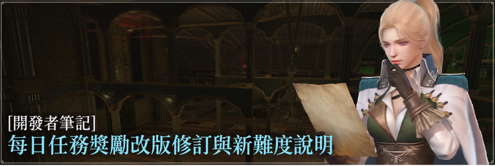
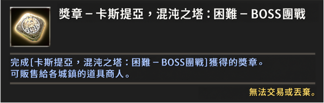

DEVELOPER'S NOTE · MISSION REFORM
每日任務獎勵改版修訂與新難度說明
十月任務搶先看後續：獎勵重新分配、BOSS 團戰與難度調整。
大家好，我是開發者 Silo。
先前透過〈十月任務更新搶先看〉向各位說明每日任務獎勵的重新分配計畫後，我們從留言及建議討論區收到許多意見。
因此，這次開發者筆記將向各位說明修訂後的改版方案。
UPDATE 01
與上篇開發者筆記相比的變更
- 減少轉為經驗值獎勵的任務：由 36 種減至 26 種。
- 新增 BOSS 團戰：時間的片段、路西弗羅城任務新增 BOSS 團戰。
- BOSS 團戰新增「極限」難度：新增更高階的挑戰，並提升通關獎勵。
- 新增「獎章」道具：原有金條類獎勵改為各任務專屬獎章，可販售給商店換取 Vis。
- 放寬小隊任務進場條件：維持小隊形式，不改為個人專用，並降低最低進場人數。
原意是建立「挑戰越高難度，就能獲得相應獎勵」的結構。為避免改版帶來過於劇烈的變化，轉為經驗值卡片獎勵的任務由 36 種減至 26 種，並新增 BOSS 團戰、縮短所需時間，讓各位獲得符合成長階段的獎勵。
同時，每日任務取得貨幣的方式也將一併調整。

各種獎章售價不同，越高階任務的獎章販售價格越高。若通關所有任務，可獲得的貨幣總量最高約為改版前的近 2 倍。
輪盤獎勵清單將移除魔法晶片，原本掉落與輪盤獎勵的預期數量改為通關任務時 100% 發放的「保底掉落」，讓各位能依照遊玩成果穩定取得。
UPDATE 02
新增 BOSS 團戰與難度
將新增共 49 種 BOSS 團戰。既有任務的 BOSS 團戰會出現與原本相同的最終 BOSS 怪物；新難度任務則會出現更強大的 BOSS。
| 類別 | 新增任務 | 數量 |
|---|---|---|
| 時間的片段 | 歪曲的時間的片段、時間的片段、扭曲的時間的片段、失真的時間的片段－BOSS 團戰 | 各 7 種，共 28 種 |
| 路西弗羅城 | 路西弗羅城、路西弗羅城：困難、路西弗羅城：極限－BOSS 團戰 | 各 6 種，共 18 種 |
| 卡斯提亞 | 卡斯提亞，礦山／遺跡／混沌之塔（極限）－BOSS 團戰 | 3 種 |
UPDATE 03
既有任務新增難度
| 類別 | 任務 |
|---|---|
| 魔性（5 種） | 魔性：達人、大師、名人、進階名人、宗師 |
| 魔性：地區任務（3 種） | 魔性的卡斯提亞：困難、魔性的阿爾莫尼亞：困難、魔性的波爾圖斯：困難 |
| 塔洛斯（1 種） | 塔洛斯：宗師 |
| 扭曲的阿爾莫尼亞（3 種） | 奧斯庫勒斯的心腹：困難、吞食記憶的棄馬：困難、墮落的騎士：困難 |
| 波爾圖斯（3 種） | 奎尼圖拉討伐戰：困難、波爾圖斯防禦戰：困難、天魔討伐戰：困難 |
| 埃利斯（2 種） | 市區防護戰：困難、納克利亞攻防戰：困難 |
UPDATE 04
既有任務追加獎勵
| 類別 | 任務 |
|---|---|
| 魔性：地區任務（3 種） | 魔性的卡斯提亞、魔性的阿爾莫尼亞、魔性的波爾圖斯 |
| 扭曲的阿爾莫尼亞（3 種） | 奧斯庫勒斯的心腹、吞食記憶的棄馬、墮落的騎士 |
| 波爾圖斯（3 種） | 奎尼圖拉討伐戰、波爾圖斯防禦戰、天魔討伐戰 |
| 埃利斯（2 種） | 市區防護戰、納克利亞攻防戰 |
| 塔洛斯（1 種） | 塔洛斯：進階名人 |
| 阿爾莫尼亞：困難（5 種） | 恐怖的祭司、憎恨的執行者、狂傲的魔法師、渾沌的騎士、憤怒的統治者：困難 |
| 義利埃：困難（3 種） | 皇家路口攻防戰、奪回軍事區、執政區奪回：困難 |
| 懸賞狩獵（4 種） | 懸賞狩獵－活死人／生靈，以及兩者的困難模式 |
| 其他（12 種） | 血腥海軍：困難、布勒高紐宮：困難、居里塔提歐寂靜時空 1～10 |
UPDATE 05
減少轉為經驗值獎勵的任務
| 經驗值任務（26 種） | 獎勵 |
|---|---|
| 卡斯提亞，礦山／遺跡／混沌之塔；其困難模式；路西弗羅城的地下實驗室、地下倉庫、祕密之庭園、月光庭園、寧靜的宴會廳、吶喊之迴廊；歪曲的時間的片段／時間的片段（勒德斯、魔獸尤勒肯、蘿茲、阿佛雷蒙、索德雷拉、奈芙蒂斯、德斯列斯） | 達人 G 經驗值卡片 大師 G 經驗值卡片 |
經驗值任務將以經驗值卡片取代 Vis、Feso 及魔法晶片；裝備、材料等其他既有獎勵則維持不變。
UPDATE 06
進場方式改善
考量各位開拓家族希望能自由選擇單人或小隊遊玩的意見，部分任務將維持小隊形式，並調整最低進場人數。
「塔洛斯：名人」、「塔洛斯：進階名人」、「市區防護戰」及「納克利亞攻防戰」的最低進場人數放寬為 1 個家族，即使不組小隊也能獨自挑戰。每一任務類別每天只能選擇一種難度進場。
以上是根據各位至今提供的意見，重新調整的任務獎勵改版方案。開發團隊不會止步於本次修訂，還將持續改善特別獎勵輪盤、個人每週／每月任務等內容。
詳細數值及適用範圍，可能在未來測試伺服器驗證時有所調整，但基本方向將依照本篇筆記所說明的內容進行。
謝謝大家。